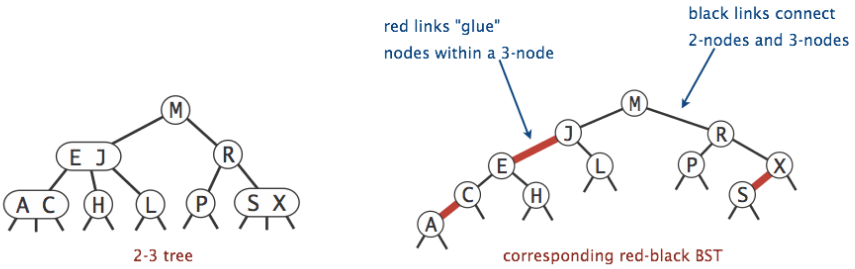

Goal: represent B-tree/2-3 tree as a binary tree - red-black tree
- We create a binary tree that directly maps to a 2-3 tree
- We represent 2-element nodes with 'glue links'
- Red links 'glue' together two nodes (forming the equivalent of a 2-element node in a 2-3 tree)
- The two nodes glued together by a red link have a total of 3 children (consistent with 2-3 tree mapping)
- Black links connect 1-element and 2-element nodes of the tree
- No node has more than one red link (or else we would have 3-element nodes)
- Every path from a root to leaf must have same number of black links (this maintains balance; makes sense since all links in the 2-3 tree correspond to black links in the red-black tree, and as the 2-3 tree is balanced, all root-leaf paths have same number of links)
- Red links lean left (this dictates how the 2-element nodes are split up, see below example):
Red-Black tree example vs 2-3 tree equivalent:

- Cool note: for any 2-3 tree that is balanced, there exists a corresponding red-black tree of depth no more than twice that of the 2-3 tree
- Further reading: there is a very advanced and complex set of rules for how to insert/delete elements from a red-black tree (tree isometry maintenance using tree rotations), look these up